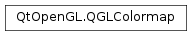

QGLColormap¶
Synopsis¶
Detailed Description¶
The
PySide2.QtOpenGL.QGLColormapclass is used for installing custom colormaps into aPySide2.QtOpenGL.QGLWidget.
PySide2.QtOpenGL.QGLColormapprovides a platform independent way of specifying and installing indexed colormaps for aPySide2.QtOpenGL.QGLWidget.PySide2.QtOpenGL.QGLColormapis especially useful when using the OpenGL color-index mode.Under X11 you must use an X server that supports either a
PseudoColororDirectColorvisual class. If your X server currently only provides aGrayScale,TrueColor,StaticColororStaticGrayvisual, you will not be able to allocate colorcells for writing. If this is the case, try setting your X server to 8 bit mode. It should then provide you with at least aPseudoColorvisual. Note that you may experience colormap flashing if your X server is running in 8 bit mode.The
PySide2.QtOpenGL.QGLColormap.size()of the colormap is always set to 256 colors. Note that under Windows you can also install colormaps in child widgets.This class uses implicit sharing as a memory and speed optimization.
Example of use:
import sys from PySide2.QtGui import QApplication, qRgb from PySide2.QtOpenGL import QGLColormap def main(argv): app = QApplication(argv) widget = MySuperGLWidget() # a QGLWidget in color-index mode colormap = QGLColormap() # This will fill the colormap with colors ranging from # black to white. for i in range(0, colormap.size()): colormap.setEntry(i, qRgb(i, i, i)) widget.setColormap(colormap) widget.show() return app.exec_() if __name__ == "__main__": main(sys.argv)
-
class
PySide2.QtOpenGL.QGLColormap¶ -
class
PySide2.QtOpenGL.QGLColormap(arg__1) Parameters: arg__1 – PySide2.QtOpenGL.QGLColormapConstruct a
PySide2.QtOpenGL.QGLColormap.Construct a shallow copy of
map.
-
PySide2.QtOpenGL.QGLColormap.entryColor(idx)¶ Parameters: idx – PySide2.QtCore.intReturn type: PySide2.QtGui.QColorReturns the
QRgbvalue in the colorcell with indexidx.
-
PySide2.QtOpenGL.QGLColormap.entryRgb(idx)¶ Parameters: idx – PySide2.QtCore.intReturn type: long Returns the
QRgbvalue in the colorcell with indexidx.
-
PySide2.QtOpenGL.QGLColormap.find(color)¶ Parameters: color – long Return type: PySide2.QtCore.intReturns the index of the color
color. Ifcoloris not in the map, -1 is returned.
-
PySide2.QtOpenGL.QGLColormap.findNearest(color)¶ Parameters: color – long Return type: PySide2.QtCore.intReturns the index of the color that is the closest match to color
color.
-
PySide2.QtOpenGL.QGLColormap.handle()¶ Return type: PySide2.QtCore.Qt::HANDLEReturns the handle for this color map.
-
PySide2.QtOpenGL.QGLColormap.isEmpty()¶ Return type: PySide2.QtCore.boolReturns
trueif the colormap is empty or it is not in use by aPySide2.QtOpenGL.QGLWidget; otherwise returnsfalse.A colormap with no color values set is considered to be empty. For historical reasons, a colormap that has color values set but which is not in use by a
PySide2.QtOpenGL.QGLWidgetis also considered empty.Compare
PySide2.QtOpenGL.QGLColormap.size()with zero to determine if the colormap is empty regardless of whether it is in use by aPySide2.QtOpenGL.QGLWidgetor not.See also
-
PySide2.QtOpenGL.QGLColormap.setEntry(idx, color)¶ Parameters: - idx –
PySide2.QtCore.int - color – long
- idx –
-
PySide2.QtOpenGL.QGLColormap.setEntry(idx, color) Parameters: - idx –
PySide2.QtCore.int - color –
PySide2.QtGui.QColor
This is an overloaded function.
Set the cell with index
idxin the colormap to colorcolor.- idx –
-
PySide2.QtOpenGL.QGLColormap.setHandle(ahandle)¶ Parameters: ahandle – PySide2.QtCore.Qt::HANDLESets the handle for this color map to
handle.
-
PySide2.QtOpenGL.QGLColormap.size()¶ Return type: PySide2.QtCore.intReturns the number of colorcells in the colormap.
© 2018 The Qt Company Ltd. Documentation contributions included herein are the copyrights of their respective owners. The documentation provided herein is licensed under the terms of the GNU Free Documentation License version 1.3 as published by the Free Software Foundation. Qt and respective logos are trademarks of The Qt Company Ltd. in Finland and/or other countries worldwide. All other trademarks are property of their respective owners.